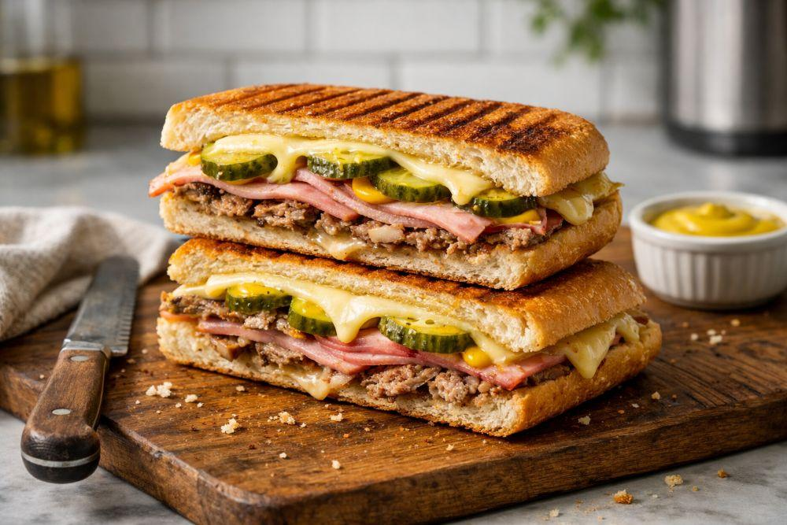

1. Bocadillo Cubano
Historia y origen
Su origen es objeto de debate. Una teoría lo sitúa en Ybor City (Florida), creado por trabajadores de fábricas de habanos, muchos de ellos inmigrantes cubanos, a finales del siglo XIX. Otra teoría defiende que nació en La Habana y se popularizó en EE. UU.. La receta se mantiene intacta desde hace más de cien años.
Variantes
Medianoche (con pan de molde dulce), Torta Cubana (versión mexicana con más ingredientes).
